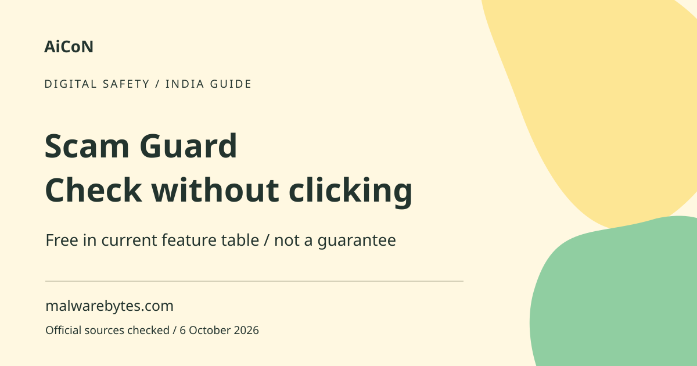

Malwarebytes Scam Guard: free checks and limits
Malwarebytes Scam Guard analyses suspicious content and offers advice. The current official help table labels Scam Guard free on Windows, Mac, iOS, iPadOS and Android. A favourable answer is not proof that a message is safe.

What does it check?
The vendor describes an AI chat that can analyse suspicious messages, links and other scam indicators and give recommendations. A scam is an attempt to trick you into giving money, information or access. Phishing is a common form that imitates a trusted service. The chatbot is an extra check, not a bank, law-enforcement service or identity verifier.
What changed from the original short post?
The original AiCoN post noted uncertainty because the promotional page called it free while placing it inside Premium Security. The current help-centre feature table explicitly marks Scam Guard free across the listed platforms. Other security functions still vary by plan. A free Scam Guard entry does not mean the entire antivirus, VPN or protection package is free.
How to use it, step by step
- If a message asks you to pay, install an app or reveal a code, pause first. Do not open its link to find out whether it is real.
- Get Malwarebytes through the official website or its linked app store. Confirm the publisher and the features available on your device.
- Find Scam Guard in the current app interface. It may be offered within a product whose other functions require a subscription.
- Copy the suspicious text or use an image only after removing unrelated personal data. Never submit a password, PIN, one-time code or full card details.
- Read the advice and the reasons given. Keep the original message and timestamp if you may need to report it.
- Verify the claim independently using a bank, courier or service contact from an official app or website you reached yourself. Do not call the number supplied in the suspicious message.
- If you already paid or shared credentials, contact the real bank or provider immediately through its official channel. A chatbot conversation is not an official report.
- If the app prompts for an upgrade, review which feature it concerns. Do not assume you must buy a security bundle just to check a message.
Why AI can miss scams
New scams appear regularly. A link may change behaviour after it is checked. A genuine-looking message can come from a compromised account. Images can hide context and a phone number alone rarely proves the sender's identity. Malwarebytes itself says that new scams are reported daily and advises not clicking when in doubt. A clean result should not override those basic checks.
Useful India and Kerala situations
Treat bank-KYC threats, parcel charges, investment invitations, job fees and urgent payment requests carefully. Even familiar local language or a copied logo does not authenticate a sender. If someone claims to be a relative or colleague, verify through a separate known contact route. Do not send a small test payment as a safety check.
Privacy before sharing a screenshot
A screenshot may contain names, balances, conversation history or notification codes. Crop or cover irrelevant information before submission, without destroying the original evidence. Review the service's privacy terms because scam submissions may be used to improve detection. Never upload an entire private chat just because one message looks suspicious.
Free does not mean fully protected
The feature table lists other functions as paid or unavailable depending on operating system. Checking a message is different from continuously blocking malicious sites or scanning a device. Review each function separately and keep system updates enabled. No detection tool can guarantee that every new fraud will be recognised.
Frequently asked questions
Is Scam Guard free now?
The checked official help table labels it free on desktop and the listed mobile platforms.
Does a safe result prove a link is genuine?
No. Verify the underlying request independently.
Does checking a scam report it to my bank?
No. Contact the bank separately using an official route.
Can I send an OTP in the screenshot?
No. Remove codes and other secrets before sharing.
Official sources
Checked 6 October 2026. Expanded from an AiCoN short post delivered 6 October 2026. Portal screens and rules can change.